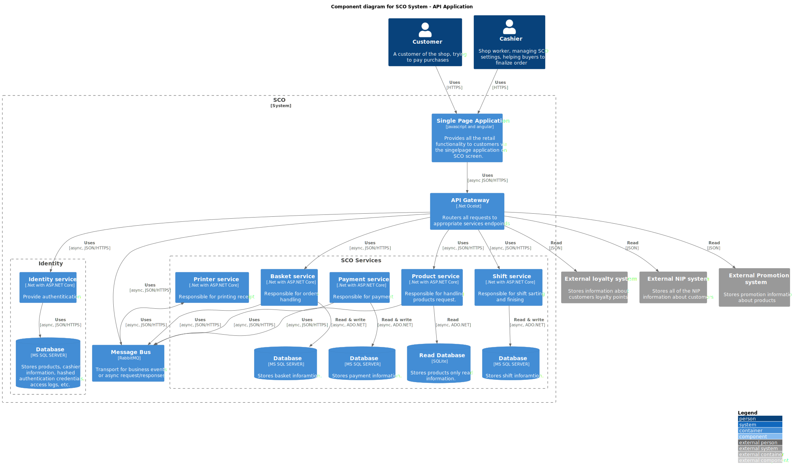

Diagrams
System Diagram
Level 1: System Context diagram
SCO is a retail managament system for providing retail service for buyers.
Self checkout systems let customers scan items and pay for their purchases without the help of store employees. Self checkout kiosks can help retailers save cost while delivering a better customer experience.
Container Diagram
Level 2: Container diagram
Cashiers and Customers can interact with system using Single Page Application written in Angular.
All API calls are routed to appropriate services through API Gateway that handles user authentication using Identity API.
System's business logic is divided into bounded contexts, each serving a specific subset of functionalities. Communication between contexts is strictly asynchronous (not in a meaning of asynchronous calls inside application but globally asynchronous).
In current state, system is based on contexts:
Identity - responsible for managing user account and authentication SCO API Server - responsible for managing books catalog and physical copies collection Printer API - responsible for printing invoices EPS - responsible for electronic payments
Component Diagrams
API Gateway
Placeholder
Identity service
Level 3: Component diagram for Identity service
Identity service acts as a guard for entire system, managing empoyees accounts infomation, providing authentication and allowing (or restricting) authenticated users access to parts of the system.
CQRS (Command Query Responsibility Segregation) is used for reduced coupling between facade (controllers) and internal business logic services.
According to CQS (Command-query separation) principles, in the system Queries retrieves data from database and processes it before returning it to user (without any side effects on system state) and Commands performs actions that changes state of the system without returning any data.